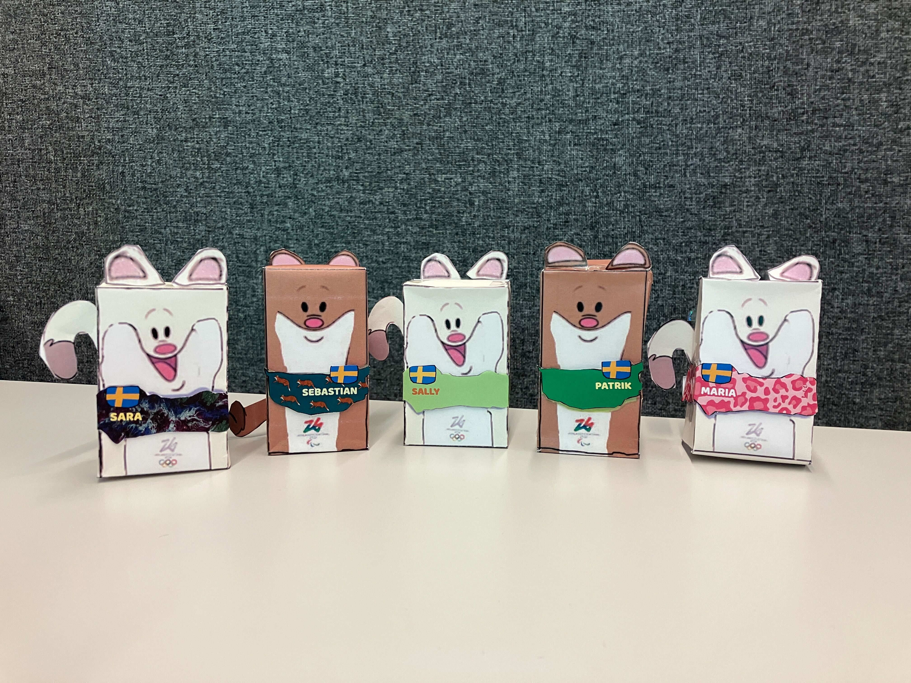

OSX-teamet
Uppgiften
Vad kan SVT göra för att ge unga en riktigt bra OS-upplevelse?🏂 Det var en klurig men spännande fråga vi fick ta oss an under praktiken. Vi hade några idéer från början, men insåg snabbt att vi två inte kunde representera alla unga. För att få en bättre bild bestämde vi oss därför för att göra en enkätundersökning. Vi ville ta reda på vilka funktioner som känns intressanta, vilka typer av profiler unga gillar att följa under OS, och vilket innehåll som skulle uppskattas.🥇